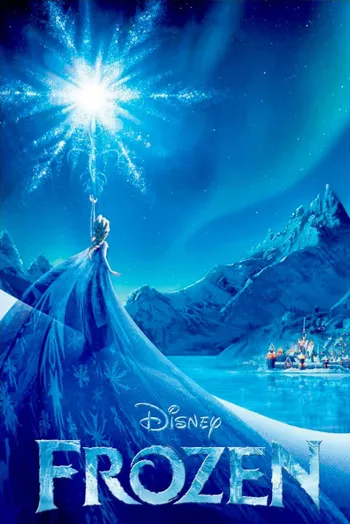
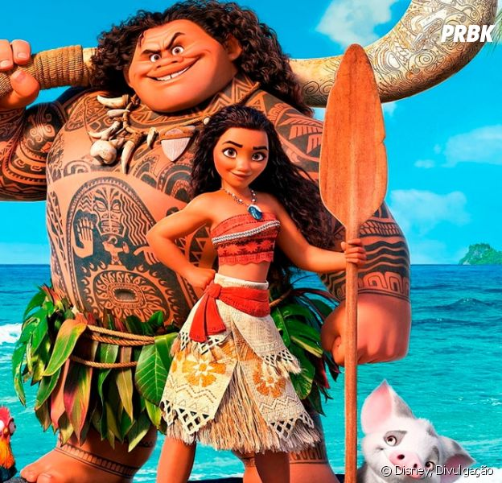
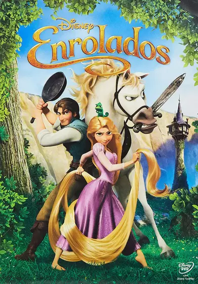

| Nome do Filme | Imagem do filme | sinópse | Ano de lançamento | Indicaçao Etária |
|---|---|---|---|---|
| FROZEN |  | Prestes a ser coroada rainha, a Princesa Elsa descobre ter poderes sobre o gelo, e o quanto os que estão ao seu redor podem ficar em perigo por causa disso. Assustada, decide se refugiar nas montanhas. E é para lá que a irmã dela, Anna, parte ao seu resgate, acompanhada de um jovem montanhista, sua rena espirituosa e um bem-humorado boneco de neve. | 03/01/2014 | Livre |
| MOANA |  | Uma jovem parte em uma missão para salvar seu povo. Durante a jornada, Moana conhece o outrora poderoso semideus Maui,que a guia em sua busca para se tornar uma mestre em encontrar caminhos. Juntos, eles navegam pelo oceano em uma viagem incrível. | 05/01/2017 | Livre |
| ENROLADOS |  | O bandido mais procurado do reino, Flynn Rider, se esconde em uma torre e acaba prisioneiro de Rapunzel, residente de longa data do local. Dona de cabelos dourados e mágicos com 21 metros de comprimento, ela está trancada há anos e deseja desesperadamente a liberdade. A adolescente determinada faz um acordo com o rapaz, e, juntos, partem para uma aventura emocionante. | 07/01/2011 | Livre |